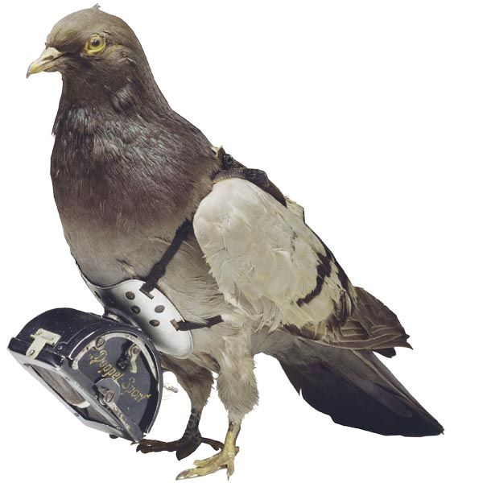

Homing pigeon
History
The homing pigeon has the ability to find its own "home(nest)" over extremely long distances. Normally it flys 80km/h fast but can speed up to 140km/h top speed. Because of these abilities the homing pigeon was used first 1150 in Baghdad to deliver messages and letters through the land. Later on, other countries began to use birds as a way of communication. Historically, pigeons carried messages only one way, to their home. They had to be transported manually before another flight. However, by placing their food at one location and their home at another location, pigeons have been trained to fly back and forth up to twice a day. Homing pigeons were still employed in the 21st century by certain remote police departments in Odisha state in eastern India to provide emergency communication services following natural disasters.
Navigation
Research has been performed with the intention of discovering how pigeons, after being transported, can find their way back from distant places they have never visited before. Most researchers believe that homing ability is based on a "map and compass" model, with the compass feature allowing birds to orient and the map feature allowing birds to determine their location relative to a goal site (home loft). While the compass mechanism appears to rely on the sun, the map mechanism has been highly debated.Some researchers believe that the map mechanism relies on the ability of birds to detect the Earth's magnetic field. Birds can detect a magnetic field to help them find their way home. Scientists have found that on top of a pigeon's beak large number of iron particles are found which remain aligned to north like a man-made compass, thus it acts as compass which helps pigeon in determining its home. A light-mediated mechanism that involves the eyes and is lateralized has been examined somewhat, but developments have implicated the trigeminal nerve in magnetoception. Research by Floriano Papi (Italy, early 1970s) and more recent work, largely by Hans Wallraff, suggest that pigeons also orient themselves using the spatial distribution of atmospheric odors,known as olfactory navigation. Near their home lofts, in areas they have previously visited, pigeons probably are guided by visual landmarks.
Other uses of the homing pigeon
- During war
- Birds were used extensively during World War I. One homing pigeon, Cher Ami, was awarded the French Croix de guerre for her heroic service in delivering 12 important messages, despite having been very badly injured.
- Smuggling
- Homing pigeons have been reported to be used as a smuggling technique, getting objects and narcotics across borders and into prisons. For instance, between 2009 and 2015, pigeons have been reported to carry cell phones, SIM cards, phone batteries and USB cords into prisons in the Brazilian state of São Paulo.
More information about homing pigeons
The postal homing pigeons were also used as carriers. They can carry weighs up to 75 gram. Some hospitals used pigeons to transport medicine to their hospitals.
